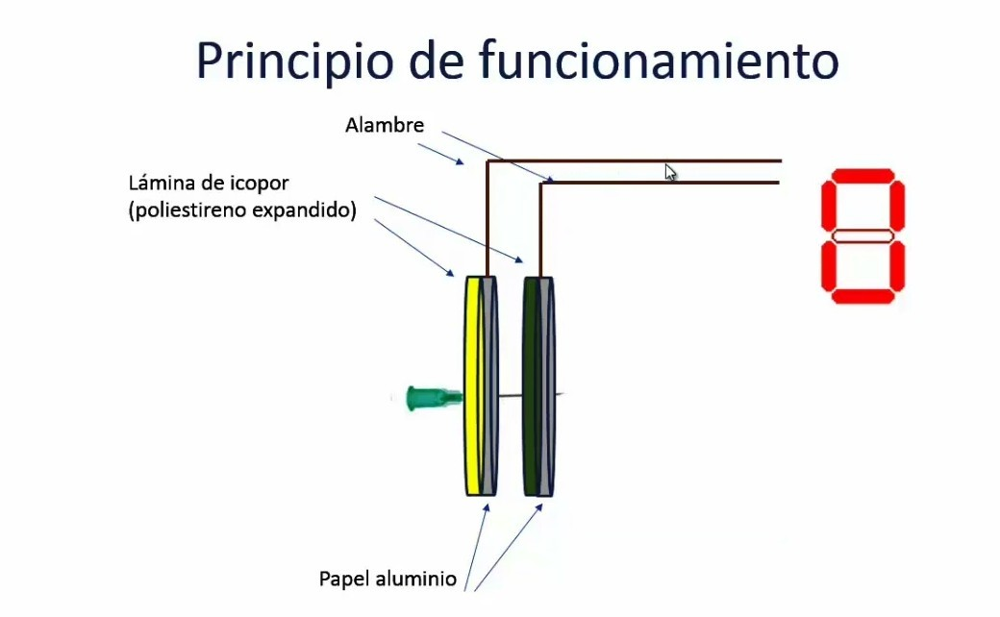

Nuestro objetivo inicial fue crear un juego de dardos electrónico utilizando arduino. La idea era construir un tablero circular de telgopor recubierto con papel de aluminio, dividido en aros que representarán diferentes puntajes. El tablero se compondría de dos capas superpuestas de telgopor, ambas con aluminio como elemento conductor. El principio del funcionamiento del tablero se basa en la creación de un circuito electrónico abierto. Cuando un dardo con la aguja metálica impacta en el tablero, la fuerza del golpe hace que la aguja atraviese la capa superior de telgopor hasta llegar a la capa inferior. En ese momento, el circuito se cierra y permite el paso de electricidad entre las dos capas de aluminio. Cada área del tablero está conectada a una entrada del sistema Arduino, que detecta la corriente eléctrica y, dependiendo del aro en que se perciba, se calcula el puntaje correspondiente. Además, el sistema está vinculado a la aplicación mediante Bluetooth, lo que nos permite registrar el puntaje de cada lanzamiento y visualizarlo en tiempo real. Esta integración ofrece una experiencia de juego interactiva y digital, combinando precisión en la medición con la comodidad de un sistema automatizado. 